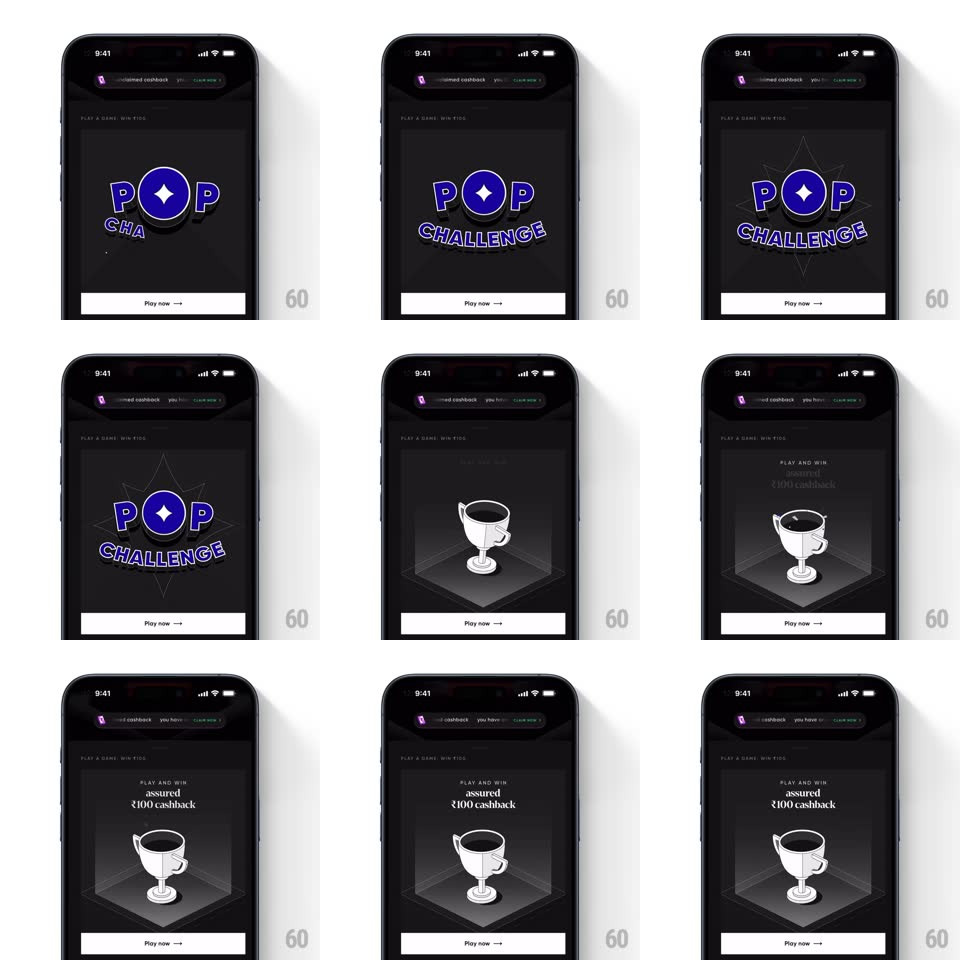

Media
Frame-by-frame

Rebuild this interaction 1:1: CRED's Pop Challenge intro card - inside a dark game card, glitch lines spark, the "POP CHALLENGE" logo assembles letter by letter with a star-flared O, then the scene cuts to a 3D trophy rotating on a lit pedestal as "PLAY AND WIN / assured ₹100 cashback" text reveals in staggered lines.

Rebuild this interaction 1:1: CRED's Pop Challenge intro card - inside a dark game card, glitch lines spark, the "POP CHALLENGE" logo assembles letter by letter with a star-flared O, then the scene cuts to a 3D trophy rotating on a lit pedestal as "PLAY AND WIN / assured ₹100 cashback" text reveals in staggered lines.
## Integration
Integration: stack-agnostic spec - springs given as stiffness/damping, timed motions as duration + curve; map every value to your framework and animation library of choice.
## Scene
Dark card ("PLAY A GAME, WIN BIG" kicker, "Play now →" button pinned at the bottom). Content area plays the intro: neon glitch streaks, the POP CHALLENGE wordmark, then a white 3D trophy inside a hexagonal glass pedestal with headline text above it.
## Motion spec
Pattern: staged intro - glitch, logo build, trophy reveal, text stagger.
- Glitch: 3-4 thin neon lines (white, blue) streak diagonally and vanish (~300ms).
- Logo: "POP" letters pop in one by one (scale 0 -> 1.15 -> 1, ~120ms each, staggered 80ms), the O carries a four-point star flare that spins in (~200ms); "CHALLENGE" sweeps in below on an arc (letters rise with slight rotation, ~300ms).
- Cut to trophy: the pedestal's hexagonal glass case fades/scales in (300ms), the trophy rises into it (translateY +20px -> 0, spring ~300/20) and rotates slowly (~8s per revolution, continuous).
- Text: "PLAY AND WIN", "assured", "₹100 cashback" fade-slide in line by line (translateY 8px, 200ms each, 150ms stagger).
## Calibration
- Each stage fully completes before the next begins - no overlapping logo and trophy.
- The trophy is white/monochrome on dark - keep contrast high, no color on the cup.
## Reduced motion
Final frame (trophy + full text) fades in complete, 300ms.
## Don't miss
- The star inside the O is part of the logo lockup, not a separate sparkle.
- "Play now →" button is static throughout - it never animates.